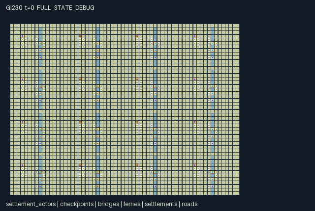

GI230 / SPATIAL
Winter Road Confederation
Release verification episode
Untrained uniform legal actions. Actual JAX state sampled along the full original episode; full-state debug camera. No human performance or learning claim.

Run this game
crucibles play --game 230
Start Python locally, then open the address printed by the terminal. Installation, multiplayer, takeover and keyboard controls →
Objective, rewards & ending
Exact task contract
{
"objective": "Supply two imported provision crates to each of sixteen settlements while managing costly, seasonal and contested travel infrastructure.",
"natural_termination": "Terminate when all sixteen received counters reach 2; otherwise truncate at t=896. No actor is automatically eliminated.",
"interaction": "Foreign traders use individually operated checkpoints, temporary team permits, toll purses and supplied ferries. Loaded traffic consumes road strength. Builders restore shared crossings, scouts can damage them or raid finite provisions, and surveys can be relayed locally. Connected perimeter routes provide costly alternatives.",
"observation_access": "Self stock/purse/allegiance plus a 7x7 patch, four detailed nearby actors and local structures. Season and time are public through each row. Survey action samples one cell four steps ahead; broadcasts carry that stored report over distance 8. Remote territory state and other teams' permits remain hidden."
}Declared per-step reward bounds: -64 to 64. Observability: partially_observable.
Rules
- The map is a square-grid territorial plain with 16 settlements and 192 independently controlled actors. Twelve consecutive IDs share one allegiance; traveling haulers begin at a neighboring checkpoint.
- Build roads with material collected from home. Roads remove the plain's one-tick movement recovery, but each loaded entry consumes one durability level.
- Bridge entry needs strength 2; during deep frost it needs 3. Every 64 ticks the season advances through sailing, deep frost and thaw; ferries sail only in season 0.
- Diplomats at their own checkpoint can open it or change the foreign toll. A visitor may buy an eight-tick team permit to use a closed crossing, while still paying its entry toll.
- Ferry operators spend construction material to add two trips. Every rider consumes one trip; foreign riders also pay one coin to the landing's settlement.
- Import a provision from another settlement to satisfy its order. Scouts may raid stored provisions or sabotage a road; these are physical state changes with competing rewards.
- Surveyors and scouts can inspect one cell four steps ahead and relay its stored location and condition to actors within eight steps.
- This territorial scene is authored data only. No replay, JAX compatibility, throughput, strategic quality or learning result is claimed.
Original mechanism document (historical status wording retained)
# Winter Road Confederation Status: AUTHORED_NOT_EXECUTED; repair attempt remains unvalidated. Candidate game-v3-00230, source attempt 1, train-only prospective source stream. Assigned author identity: gpt-6-astra / max; root dispatch is the authority for actual model execution. A/O/U/H = 192/224/23/896. Source SHA-256: 4131c3b22a610ef51cb5cd6ee32ff15fc21f4355ce0d90c7c98906edd7635d39. ## Engineering repair and prior failed attempt This is the separately requested first engineering repair of the same existing game. The original attempt_00 source SHA-256 is 2b8f2fa14a225ee7fbbec05505a3b8548e5aada3124fd0f28db39965460ede70, and its manifest SHA-256 is 6998bc19652aba7da432245c160c0ab151d7e2182bac31cb9ec6b0cefacb4da2. The supplied sealed engineering feedback SHA-256 is 786d4b757cb376603cbba12a82167723d022e5dab5bc0b1cff5ae350c57616b3. It records FAILED_OR_INCOMPLETE: 8 reset calls, 0 completed joint steps and 0 agent steps. The first raw_step JIT compilation failed in act at candidate.py line 260 with TypeError: neg does not accept dtype bool. The unfinished raw-step operation is not counted as a completed transition. The original failure remains part of the record. The sole source edit is on line 260: the numeric reward term now uses -move.astype(jnp.float32) instead of -move. The comparison-defined movement flag remains boolean elsewhere; only its reward indicator is converted to float32 before unary negation. All constants and all other source bytes are identical. This encodes the already documented movement-cost meaning without changing its coefficients, eligible actions, map, state, observations, update order or terminal logic. It is a source-level engineering correction, not a measured reward change or an easier replacement. Both original literal scripts, every seed, the paired prefix and both branch action arrays are retained byte for byte except their top-level source hash binding. Manifest content changes only its source hash; scene content changes only its source and manifest hashes. No script or paired intervention has been executed for attempt_01, and no successful compilation, replay, R0, solvability, training or scientific result is claimed. ## Native game and dependencies Sixteen settlements occupy a connected 64 by 48 square-grid seasonal plain. Each has twelve separately controlled actors, with two initial copies of six complementary tool roles: survey, build, ferry operation, haul, scout and diplomacy. These are people in one world, not independent copies of a small environment. Each settlement's first hauler begins at the previous settlement's checkpoint carrying one provision; the other actors begin near their own roads, ferry and depot. Perimeter routes around river segments remain possible alternatives. Plain movement sets a recovery counter to 2, which falls to 1 in the same environmental pass; the following tick must therefore recover before another move. Road movement avoids that delay. Entering a road with provision cargo consumes one durability. Bridges use that same actual road grid: strength at least 2 permits entry, except deep frost requires 3. Actors already on a degraded bridge may leave; the rule blocks new entry rather than retroactively teleporting or killing its occupant. The public season is floor(t/64) modulo 3. Season 0 permits ferry trips, season 1 is deep frost, and season 2 is thaw. On the transition into thaw, at ticks 128, 320, 512 and 704, every positive road loses one durability. Material gathered from the home depot can build roads or maintain bridges, or a ferry operator can consume it to add two ferry charges. Each ferry trip consumes a charge and foreign riders pay one coin. Checkpoint g belongs to settlement g. Only its owner's diplomat can change its open state or toll. A closed checkpoint can still admit a team holding a local temporary permit; a visitor buys that permit for one coin. A purchase writes TTL 8 before the end-tick decrement, so the next returned state contains 7. Permit ownership is by team, creating a benefit for other members of the same visiting settlement. Foreign entry still pays the currently posted toll, even with a permit. Toll rates cycle through 0, 1 and 2. Actor purses are finite; receipt banks cap at 4096. A home depot provides finite construction stock and provision loads. A carried provision keeps its origin through handoff; a different settlement may accept it until its imported-order count reaches two. Scouts can raid another settlement's provision stock or reduce a facing road's durability. A survey samples a cell four steps ahead and stores its site and coarse condition. A later broadcast delivers that stored report to actors within Manhattan distance 8. The stored report can become stale because the world can change. Plausible choices include maintaining roads for everyone, operating a toll crossing, granting short permits to a visiting team, using a ferry instead of a degrading bridge, carrying materials rather than provisions, taking slower perimeter routes, and exploiting opened passages for raids. Investment and conflict alter real connectivity, costs, local information and payoffs. No strategy has been shown superior. ## Actions, observations and presentation Actions 0..8 are common movement/facing controls. Actions 9..22 survey, gather material, build, load/deliver provisions, ride ferry, supply ferry, toggle checkpoint, set toll, buy permit, raid, sabotage, hand off, broadcast and swap tools. The manifest describes each exact label and eligibility. Crossing fees and collision checks happen when that actor's cyclic priority turn resolves. The 224-column observation has 16 self values; a 49-cell three-channel terrain/road/cargo-occupancy patch; four detailed nearby actors; local checkpoint, settlement, ferry and bridge records; and a four-field heard report. All local structure records are zero outside radius 3. Other teams' permit TTLs remain hidden and are deliberately absent from rendered checkpoint attributes. The current season is public; remote queues and map damage are not. The scene uses settlement flags, territorial checkpoint objects, ferry landings and the actual road-cell entities. Its square-grid topology is preserved; no hex-map geometry or separate strategic dashboard substitutes for native movement. Road objects have capacity 3072, but only cells with positive durability are active. They are infrastructure, not additional agents. ## Rewards and termination reward_parts has six columns with explicit recipients. - Column 0 charges the actor 0.005 for a road move or 0.02 for a plain move, 0.02 for build/ferry supply/sabotage, and 0.005 for an unavailable requested move. A legal action at the pre-step boundary can become unavailable during cyclic contention. - Column 1 gives the actor 0.3 per foreign provision delivery and 0.1 per raid. - Column 2 gives every member of the receiving settlement 0.1 per delivery, or charges every member of the raided settlement 0.1 per raid. - Column 3 gives actors within Chebyshev distance 3 of a bridge a 0.03 milestone component when a builder changes that bridge from strength 1 to 2. This is an actual repair event; it is not an arbitrary vote. - Column 4 charges the paying actor 0.02 per crossing/permit coin paid. - Column 5 gives each member of the corresponding owner settlement 0.002 per collected checkpoint, ferry or permit coin. The declared interval [-64, 64] conservatively bounds at most 192 action resolutions and these bounded event contributions per actor. It is an interface range, not a target. Deposits, purse caps and completed-order caps keep observation normalizers finite. Provision handoff preserves its origin; road strength remains 0..3. Natural completion is two imported provisions received at all sixteen settlements. Otherwise H=896 truncates, with natural priority at the same tick. All 192 actors remain active until joint termination. ## Hypotheses and limits The first literal script attempts a diplomat's open/toll decision and a neighboring settlement hauler's paid passage, with actual recovery ticks and a later survey broadcast. The second attempts a built bridge, a loaded crossing that consumes durability and a ferry trip made possible by another actor's supply. The paired hypothesis changes only owner diplomat 5's open action, keeps both suffixes as identical waits, and inspects visitor actor 15's feasible east move. It expressly does not claim collected tolls without actual entry. Source syntax and metadata checks do not execute that comparison. JIT/vmap/scan parity, costs, human play, non-isomorphism, strategic quality, learning and transfer remain unverified. ## Literal source evidence These line references identify authored implementation expressions, not measured effects. - Repaired numeric movement-cost indicator: candidate.py line 260, literal source: `rp = rp.at[i, 0].add(-move.astype(jnp.float32) * jnp.where(road > 0, 0.005, 0.02) - 0.02 * (build | operate | damage) - 0.005 * blocked)`. - Gate/bridge topology and fees: candidate.py line 25, literal source: `def walkable(self, s, i, xy):`. - Roles and opportunity conditions: candidate.py line 39, literal source: `def legal_row(self, s, i):`. - Foreign hauler placement: candidate.py line 100, literal source: `pp = pp.at[:, 3, :].set(base[(g + 15) % 16] + jnp.array([7, 5], jnp.int32))`. - Loaded road wear: candidate.py line 209, literal source: `wear = move & (road > 0) & (cargo > 0)`. - Actual bridge investment event: candidate.py line 263, literal source: `milestone = build & (s["tiles"][q[1], q[0]] == 3) & (s["road_grid"][q[1], q[0]] == 1)`. - Team permit state: candidate.py line 248, literal source: `z["permit"] = z["permit"].at[g, team].set(jnp.where(negotiate, 8, z["permit"][g, team]))`. - Scheduled infrastructure loss: candidate.py line 276, literal source: `thaw = ((s["t"] + 1) % 192) == 128`. - Absorbing native boundary: candidate.py line 291, literal source: `def raw_step(self, key, state, actions):`. ## Read-only reference use for this repair The current read set is exactly the 17 physically supplied files recorded in author_input_freeze.json: INPUT_MANIFEST248.json, request.json, feedback.json, the seven files under inputs/, and the seven copied files under previous_attempt00/. Every input was rehashed against the sealed packet or the dispatch identities. The current request overrides the copied original-author contract only for this specifically assigned attempt_01 repair, allowed previous-attempt input and seventh output. The original generation record and input freeze are historical evidence read as provided files. Their historical external paths, former batch scope, reference names and no-execution statements describe the prior author turn; they are neither current read permissions nor a current execution status. None of those external paths or reference links was followed. The current supplied static whitelist is inputs/trusted/code_contract.py, SHA-256 d8702b586664c9bd6828ce5a0393dbbb97606a63e1404043b69a3c25cc28b09e. No other game, memory, training/development/heldout material, browser, network or remote system was accessed. ## Boundary and evidence status The native interface is reset(key), observe(state), legal_actions(state), and raw_step(key,state,actions). All state leaves are fixed-shape int32, bool or float32 arrays declared in manifest.json. Keys are accepted but intentionally unused: these original rules and layouts are deterministic. Small integer quantities use int32 at the boundary; there is no hidden PRNG key in state. The joint input is one int32 action per actor. Resolution uses rotating priority (k + input t) modulo A. Each actor's action is rechecked against the current intermediate state, so contention can turn a previously legal intention into a deterministic wait. Environmental processes run once afterward. This is a simultaneous input interface with explicitly sequential conflict resolution, not a claim that actions commute. A nonterminal step advances the int32 clock once. Natural completion takes priority over H. An already-terminal raw call preserves the entire state, observation, clock and terminal causes and returns zero reward; it never auto-resets. Event flags refer to the last actual nonabsorbing step and are not new events on repeated absorbing calls. A separate trusted wrapper or public adapter remains outside this author package. During this repair author turn, no candidate was imported or executed. No JAX/NumPy runtime, provided validator, trajectory script, PRNG test, local model, remote job, HTTP endpoint, browser, training or evaluation was run. Standard-library AST parsing, exact source-byte comparison, JSON-field comparison and SHA-256 checks are not native validation. The prior attempt did undergo the failed sealed validation recorded above; these no-execution statements apply to the new repair authoring only. This is one authorized repair (1 of 2 allowed) of existing game-v3-00230, with no new proposal, mutation, game ID or production reservation. Source authoring is not an R0, causal, animation, solvability, learning or transfer receipt. Further execution requires the separately controlled sealed process and is outside this author assignment.
Commands
Roles & abilities
agent_0 group 0 / surveyor
agent_1 group 0 / road builder
agent_2 group 0 / ferry operator
agent_3 group 0 / hauler
agent_4 group 0 / scout
agent_5 group 0 / diplomat
agent_6 group 0 / surveyor
agent_7 group 0 / road builder
agent_8 group 0 / ferry operator
agent_9 group 0 / hauler
agent_10 group 0 / scout
agent_11 group 0 / diplomat
agent_12 group 1 / surveyor
agent_13 group 1 / road builder
agent_14 group 1 / ferry operator
agent_15 group 1 / hauler
agent_16 group 1 / scout
agent_17 group 1 / diplomat
agent_18 group 1 / surveyor
agent_19 group 1 / road builder
agent_20 group 1 / ferry operator
agent_21 group 1 / hauler
agent_22 group 1 / scout
agent_23 group 1 / diplomat
agent_24 group 2 / surveyor
agent_25 group 2 / road builder
agent_26 group 2 / ferry operator
agent_27 group 2 / hauler
agent_28 group 2 / scout
agent_29 group 2 / diplomat
agent_30 group 2 / surveyor
agent_31 group 2 / road builder
agent_32 group 2 / ferry operator
agent_33 group 2 / hauler
agent_34 group 2 / scout
agent_35 group 2 / diplomat
agent_36 group 3 / surveyor
agent_37 group 3 / road builder
agent_38 group 3 / ferry operator
agent_39 group 3 / hauler
agent_40 group 3 / scout
agent_41 group 3 / diplomat
agent_42 group 3 / surveyor
agent_43 group 3 / road builder
agent_44 group 3 / ferry operator
agent_45 group 3 / hauler
agent_46 group 3 / scout
agent_47 group 3 / diplomat
agent_48 group 4 / surveyor
agent_49 group 4 / road builder
agent_50 group 4 / ferry operator
agent_51 group 4 / hauler
agent_52 group 4 / scout
agent_53 group 4 / diplomat
agent_54 group 4 / surveyor
agent_55 group 4 / road builder
agent_56 group 4 / ferry operator
agent_57 group 4 / hauler
agent_58 group 4 / scout
agent_59 group 4 / diplomat
agent_60 group 5 / surveyor
agent_61 group 5 / road builder
agent_62 group 5 / ferry operator
agent_63 group 5 / hauler
agent_64 group 5 / scout
agent_65 group 5 / diplomat
agent_66 group 5 / surveyor
agent_67 group 5 / road builder
agent_68 group 5 / ferry operator
agent_69 group 5 / hauler
agent_70 group 5 / scout
agent_71 group 5 / diplomat
agent_72 group 6 / surveyor
agent_73 group 6 / road builder
agent_74 group 6 / ferry operator
agent_75 group 6 / hauler
agent_76 group 6 / scout
agent_77 group 6 / diplomat
agent_78 group 6 / surveyor
agent_79 group 6 / road builder
agent_80 group 6 / ferry operator
agent_81 group 6 / hauler
agent_82 group 6 / scout
agent_83 group 6 / diplomat
agent_84 group 7 / surveyor
agent_85 group 7 / road builder
agent_86 group 7 / ferry operator
agent_87 group 7 / hauler
agent_88 group 7 / scout
agent_89 group 7 / diplomat
agent_90 group 7 / surveyor
agent_91 group 7 / road builder
agent_92 group 7 / ferry operator
agent_93 group 7 / hauler
agent_94 group 7 / scout
agent_95 group 7 / diplomat
agent_96 group 8 / surveyor
agent_97 group 8 / road builder
agent_98 group 8 / ferry operator
agent_99 group 8 / hauler
agent_100 group 8 / scout
agent_101 group 8 / diplomat
agent_102 group 8 / surveyor
agent_103 group 8 / road builder
agent_104 group 8 / ferry operator
agent_105 group 8 / hauler
agent_106 group 8 / scout
agent_107 group 8 / diplomat
agent_108 group 9 / surveyor
agent_109 group 9 / road builder
agent_110 group 9 / ferry operator
agent_111 group 9 / hauler
agent_112 group 9 / scout
agent_113 group 9 / diplomat
agent_114 group 9 / surveyor
agent_115 group 9 / road builder
agent_116 group 9 / ferry operator
agent_117 group 9 / hauler
agent_118 group 9 / scout
agent_119 group 9 / diplomat
agent_120 group 10 / surveyor
agent_121 group 10 / road builder
agent_122 group 10 / ferry operator
agent_123 group 10 / hauler
agent_124 group 10 / scout
agent_125 group 10 / diplomat
agent_126 group 10 / surveyor
agent_127 group 10 / road builder
agent_128 group 10 / ferry operator
agent_129 group 10 / hauler
agent_130 group 10 / scout
agent_131 group 10 / diplomat
agent_132 group 11 / surveyor
agent_133 group 11 / road builder
agent_134 group 11 / ferry operator
agent_135 group 11 / hauler
agent_136 group 11 / scout
agent_137 group 11 / diplomat
agent_138 group 11 / surveyor
agent_139 group 11 / road builder
agent_140 group 11 / ferry operator
agent_141 group 11 / hauler
agent_142 group 11 / scout
agent_143 group 11 / diplomat
agent_144 group 12 / surveyor
agent_145 group 12 / road builder
agent_146 group 12 / ferry operator
agent_147 group 12 / hauler
agent_148 group 12 / scout
agent_149 group 12 / diplomat
agent_150 group 12 / surveyor
agent_151 group 12 / road builder
agent_152 group 12 / ferry operator
agent_153 group 12 / hauler
agent_154 group 12 / scout
agent_155 group 12 / diplomat
agent_156 group 13 / surveyor
agent_157 group 13 / road builder
agent_158 group 13 / ferry operator
agent_159 group 13 / hauler
agent_160 group 13 / scout
agent_161 group 13 / diplomat
agent_162 group 13 / surveyor
agent_163 group 13 / road builder
agent_164 group 13 / ferry operator
agent_165 group 13 / hauler
agent_166 group 13 / scout
agent_167 group 13 / diplomat
agent_168 group 14 / surveyor
agent_169 group 14 / road builder
agent_170 group 14 / ferry operator
agent_171 group 14 / hauler
agent_172 group 14 / scout
agent_173 group 14 / diplomat
agent_174 group 14 / surveyor
agent_175 group 14 / road builder
agent_176 group 14 / ferry operator
agent_177 group 14 / hauler
agent_178 group 14 / scout
agent_179 group 14 / diplomat
agent_180 group 15 / surveyor
agent_181 group 15 / road builder
agent_182 group 15 / ferry operator
agent_183 group 15 / hauler
agent_184 group 15 / scout
agent_185 group 15 / diplomat
agent_186 group 15 / surveyor
agent_187 group 15 / road builder
agent_188 group 15 / ferry operator
agent_189 group 15 / hauler
agent_190 group 15 / scout
agent_191 group 15 / diplomat
Observation permissions
Training receives only the original observation rows. Role cameras use declared visibility; debug cameras are explicitly marked. Local benchmark records log debug exposure and role takeover history.
Exact observation layout
[
{
"slice": [
0,
16
],
"meaning": "Self: x/63,y/47,facing/3,tool/5,team/15,material/3,cargo,origin/15,gold/8,cooldown/2,t/896,season/2,report/3,report_x/63,report_y/47,blocked. Survey reports are 1 plain, 2 road or river, 3 road+river; coordinates disambiguate remembered site.",
"visibility": "self"
},
{
"slice": [
16,
163
],
"meaning": "7x7 row-major patch [terrain/5,road durability/3,occupancy: 0 empty, 0.5 empty-handed actor, 1 actor with provision]; outside terrain and road are -1.",
"visibility": "local"
},
{
"slice": [
163,
195
],
"meaning": "Nearest 4 other actors within Chebyshev 3: [visible,dx/3,dy/3,team/15,tool/5,material/3,cargo,gold/8]; missing rows zero.",
"visibility": "local"
},
{
"slice": [
195,
203
],
"meaning": "Nearest local checkpoint: [visible,dx/3,dy/3,owner/15,open,toll/2,this actor team's permit TTL/8,bank/4096]. Other teams' permits are not exposed.",
"visibility": "local"
},
{
"slice": [
203,
210
],
"meaning": "Nearest local settlement: [visible,dx/3,dy/3,owner/15,provisions/32,materials/24,received/2].",
"visibility": "local"
},
{
"slice": [
210,
215
],
"meaning": "Nearest local ferry: [visible,dx/3,dy/3,charge/4,season allows sailing].",
"visibility": "local"
},
{
"slice": [
215,
220
],
"meaning": "Nearest local bridge: [visible,dx/3,dy/3,strength/3,currently traversable under season].",
"visibility": "local"
},
{
"slice": [
220,
224
],
"meaning": "Latest current-tick report heard within Manhattan 8: [has report,value/3,x/63,y/47]. Lowest-index current sender wins; absent report uses own coordinates and value 0.",
"visibility": "local"
}
]Entity visibility & attributes
[
{
"id": "settlement_actors",
"kind": "agent",
"count": 192,
"position": [
"pos"
],
"active": [
"active"
],
"visibility": [
"agent_vis"
],
"attributes": [
{
"state_path": [
"team"
],
"meaning": "Settlement allegiance 0..15",
"display": "category"
},
{
"state_path": [
"tool"
],
"meaning": "0 survey, 1 build, 2 ferry, 3 haul, 4 scout, 5 diplomacy",
"display": "category"
},
{
"state_path": [
"material"
],
"meaning": "Carried construction material; 0..3",
"display": "number"
},
{
"state_path": [
"cargo"
],
"meaning": "One provision crate carried",
"display": "flag"
},
{
"state_path": [
"gold"
],
"meaning": "Actor coin purse; 0..8",
"display": "number"
}
]
},
{
"id": "checkpoints",
"kind": "gate",
"count": 16,
"position": [
"gate_pos"
],
"active": [
"gate_active"
],
"visibility": [
"gate_vis"
],
"attributes": [
{
"state_path": [
"gate_open"
],
"meaning": "Open passage; closed passage needs a valid permit",
"display": "flag"
},
{
"state_path": [
"toll"
],
"meaning": "Foreign-entry fee; 0..2",
"display": "number"
},
{
"state_path": [
"bank"
],
"meaning": "Settlement crossing revenue; capped at 4096",
"display": "number"
}
]
},
{
"id": "bridges",
"kind": "landmark",
"count": 16,
"position": [
"bridge_pos"
],
"active": [
"bridge_active"
],
"visibility": [
"bridge_vis"
],
"attributes": [
{
"state_path": [
"bridge_strength"
],
"meaning": "Actual road strength at the bridge; 0..3",
"display": "bar"
}
]
},
{
"id": "ferries",
"kind": "object",
"count": 16,
"position": [
"ferry_pos"
],
"active": [
"ferry_active"
],
"visibility": [
"ferry_vis"
],
"attributes": [
{
"state_path": [
"ferry_charge"
],
"meaning": "Supplied ferry trips remaining; 0..4",
"display": "bar"
}
]
},
{
"id": "settlements",
"kind": "landmark",
"count": 16,
"position": [
"town_pos"
],
"active": [
"town_active"
],
"visibility": [
"town_vis"
],
"attributes": [
{
"state_path": [
"provisions"
],
"meaning": "Local stored provisions",
"display": "number"
},
{
"state_path": [
"materials"
],
"meaning": "Local construction stock",
"display": "number"
},
{
"state_path": [
"received"
],
"meaning": "Imported provisions received; goal 2",
"display": "number"
}
]
},
{
"id": "roads",
"kind": "object",
"count": 3072,
"position": [
"road_pos"
],
"active": [
"road_active"
],
"visibility": [
"road_vis"
],
"attributes": [
{
"state_path": [
"road_level"
],
"meaning": "Persistent road durability at this actual tile; 1..3",
"display": "bar"
}
]
}
]Actual verification & provenance
Per-game execution receipt
{
"game": "gi230",
"status": "PASS",
"verification_revision": 2,
"source_sha256": "4131c3b22a610ef51cb5cd6ee32ff15fc21f4355ce0d90c7c98906edd7635d39",
"seed": 20261101,
"runtime": {
"jax": "0.4.38",
"numpy": "1.26.4",
"devices": [
"TFRT_CPU_0"
]
},
"dimensions": {
"num_agents": 192,
"observation_size": 224,
"num_actions": 23,
"max_steps": 896
},
"checks": {
"eager_reset": {
"status": "PASS",
"seconds": 6.985107898712158
},
"observation_spaces_legal_masks": {
"status": "PASS",
"seconds": 2.864495277404785
},
"eager_step": {
"status": "PASS",
"seconds": 2.171856164932251
},
"jit_reset": {
"status": "PASS",
"seconds": 1.2838480472564697
},
"jit_step": {
"status": "PASS",
"seconds": 3.492190361022949
},
"eager_jit_integer_parity_float_measurement": {
"status": "PASS",
"seconds": 0.011077642440795898
},
"jit_vmap_reset": {
"status": "PASS",
"seconds": 1.4320459365844727
},
"jit_vmap_step": {
"status": "PASS",
"seconds": 4.810805320739746
},
"outer_autoreset_api": {
"status": "PASS",
"seconds": 5.279337644577026
},
"full_original_horizon_episode_and_render": {
"status": "PASS",
"seconds": 30.131219387054443
}
},
"human_scores": null,
"browser_controls": "PENDING",
"failures": [],
"elapsed_seconds": 59.214112281799316,
"float_parity_max_abs": 5.960464477539063e-08,
"numerical_parity": "UNDETERMINED_NONZERO_FLOAT_DIFFERENCE",
"raw_terminal_absorbing": "PASS",
"terminal_outer_reset": "PASS",
"episode_steps": 896,
"scripted_random_returns": [
-4.153999898117036,
-4.013999889604747,
-4.483999894466251,
-5.178999878931791,
-4.188999893842265,
-4.4039998925291,
-4.463999891187996,
-4.448999891523272,
-4.533999874489382,
-4.468999887583777,
-4.743999888421968,
-4.468999894335866,
-4.670999905560166,
-5.065999888814986,
-4.980999894673005,
-4.695999881951138,
-4.975999902002513,
-4.815999902086332,
-4.4209999109152704,
-4.685999904992059,
-4.870999897364527,
-4.830999901751056,
-4.220999893499538,
-4.950999891618267,
-4.667999894358218,
-4.447999892290682,
-4.69299987051636,
-3.7779998923651874,
-4.867999882670119,
-4.887999885715544,
-4.562999889487401,
-4.8229998832102865,
-5.11299988348037,
-4.167999902041629,
-4.542999893659726,
-4.632999894674867,
-4.794999896548688,
-4.8649998949840665,
-4.6599998995661736,
-4.754999878816307,
-4.579999905079603,
-5.03499989118427,
-4.309999888762832,
-5.124999892897904,
-4.764999897219241,
-5.10999988950789,
-4.7799998968839645,
-5.094999889843166,
-4.952999885659665,
-4.767999886535108,
-4.512999895261601,
-4.432999897515401,
-4.837999884504825,
-4.77799988957122,
-4.632999888854101,
-4.267999897710979,
-4.5979998940601945,
-4.50799989211373,
-4.662999889347702,
-4.322999896481633,
-5.058999885106459,
-4.628999902866781,
-4.9939998865593225,
-4.838999874889851,
-4.438999898498878,
-4.943999891867861,
-4.918999888468534,
-4.863999896682799,
-4.348999905399978,
-4.43399990722537,
-5.1139998838771135,
-4.783999872859567,
-4.3979998948052526,
-4.62799988896586,
-4.707999888109043,
-4.487999892560765,
-4.5229998882859945,
-4.902999883284792,
-4.152999881654978,
-5.2679998751264066,
-4.067999902181327,
-4.7229998875409365,
-4.662999888183549,
-4.652999884914607,
-4.74499990302138,
-4.5849998879712075,
-5.359999888809398,
-4.849999892991036,
-4.579999903449789,
-5.284999894909561,
-4.7649998986162245,
-4.569999907398596,
-5.009999890113249,
-4.674999900860712,
-4.704999896232039,
-4.50999990827404,
-4.687999888323247,
-4.327999900327995,
-4.8679998884908855,
-4.742999890819192,
-4.292999900178984,
-4.657999888760969,
-4.547999894013628,
-5.037999869324267,
-4.837999888462946,
-4.6029998902231455,
-4.417999894823879,
-4.382999890949577,
-4.489999894052744,
-4.964999882970005,
-5.444999883649871,
-4.394999903859571,
-4.374999903840944,
-5.464999875519425,
-5.489999879384413,
-4.314999897964299,
-4.979999878909439,
-4.489999897312373,
-4.2699998987372965,
-4.6899998895823956,
-4.478999895509332,
-4.443999896291643,
-4.978999884566292,
-5.20399987953715,
-4.5939998927060515,
-4.683999891160056,
-4.773999888915569,
-4.6639998911414295,
-5.018999883439392,
-4.678999880095944,
-4.618999892147258,
-4.763999892864376,
-4.515999902505428,
-4.705999901983887,
-5.4409998778719455,
-3.970999910729006,
-4.395999901229516,
-4.875999893993139,
-5.020999887492508,
-5.150999888079241,
-4.785999892745167,
-4.800999896135181,
-4.4109999008942395,
-4.375999901909381,
-4.557999897282571,
-4.572999896714464,
-4.407999900402501,
-4.7129998710006475,
-4.662999894004315,
-4.477999880211428,
-5.037999886320904,
-4.747999892802909,
-4.892999889329076,
-4.4229998998343945,
-4.3779999010730535,
-4.587999896379188,
-4.7449998955708,
-4.74999989522621,
-5.294999886536971,
-4.924999891547486,
-4.31999990507029,
-4.629999883240089,
-4.959999898215756,
-4.294999909354374,
-4.949999891454354,
-4.8449998965952545,
-4.484999901382253,
-4.729999900097027,
-4.62299990025349,
-4.867999898502603,
-4.3229999067261815,
-5.287999889114872,
-4.637999907368794,
-5.177999887615442,
-4.437999904388562,
-5.072999893920496,
-4.547999909380451,
-5.217999886954203,
-4.257999900961295,
-4.792999900178984,
-4.715999890584499,
-4.635999892372638,
-4.920999885769561,
-4.515999895054847,
-4.535999898100272,
-4.320999902905896,
-5.080999882193282,
-4.425999900558963,
-4.745999893406406,
-4.470999896060675,
-4.7209998939652,
-4.840999876148999
],
"terminal": true,
"demo_information": "FULL_STATE_DEBUG",
"demo_frames": 26,
"render_roles_checked": 192
}Chromium control verification
{
"game": "gi230",
"status": "PASS",
"human_scores": null,
"engineering": true,
"checks": [
"catalog_selected_and_real_native_reset",
"keyboard_native_direction_command",
"dom_queue_and_native_step",
"second_participant_ownership_and_native_joint_step",
"all_roles_individually_controllable_no_role_cap",
"explicit_debug_camera",
"release_to_pure_ai_without_reset",
"close_session_preserves_log"
],
"ui_sha256": "96243f9de144b80b5e20a114330e2206bdcd58d3efc9c6f13bbc08b95cacc14d",
"keyboard_action_id": 1,
"seconds": 20.54827380180359
}Original identity and file hashes
{
"id": 230,
"key": "gi230",
"title": "Winter Road Confederation",
"summary": "",
"tags": [],
"family": "spatial",
"dimensions": {
"num_agents": 192,
"observation_size": 224,
"num_actions": 23,
"max_steps": 896
},
"source_sha256": "4131c3b22a610ef51cb5cd6ee32ff15fc21f4355ce0d90c7c98906edd7635d39",
"manifest_sha256": "f43190fa531a2cd0c42d65f8016e79e51c5176d1e509670243438f906b4aac2e",
"files": [
{
"file": "candidate.py",
"sha256": "4131c3b22a610ef51cb5cd6ee32ff15fc21f4355ce0d90c7c98906edd7635d39",
"bytes": 19750,
"origin": "work/exp_2/game_incubator_v3/sources/game-v3-00230/attempt_01/candidate.py"
},
{
"file": "manifest.json",
"sha256": "f43190fa531a2cd0c42d65f8016e79e51c5176d1e509670243438f906b4aac2e",
"bytes": 44325,
"origin": "work/exp_2/game_incubator_v3/sources/game-v3-00230/attempt_01/manifest.json"
},
{
"file": "scene.json",
"sha256": "00c6b3be8474ec0e9a47cdad2d0f050728c2b89b7379aa447bf275ecd24d6431",
"bytes": 10939,
"origin": "work/exp_2/game_incubator_v3/sources/game-v3-00230/attempt_01/scene.json"
},
{
"file": "mechanism.md",
"sha256": "ade257e24b1bba605a87b68dd86de6bd5b770a417124c924d63bfcc21712a5e5",
"bytes": 13298,
"origin": "work/exp_2/game_incubator_v3/sources/game-v3-00230/attempt_01/mechanism.md"
},
{
"file": "playthrough.json",
"sha256": "91e6a7079352214e2a1c230fa2df4522417f127101ffd63e07c10b6d71e2e8ee",
"bytes": 73721,
"origin": "work/exp_2/game_incubator_v3/sources/game-v3-00230/attempt_01/playthrough.json"
}
],
"original_status": "SOURCE_ONLY",
"original_saved_replay": false,
"release_validation": "PASS",
"human_scores": null,
"browser_validation": "PASS"
}